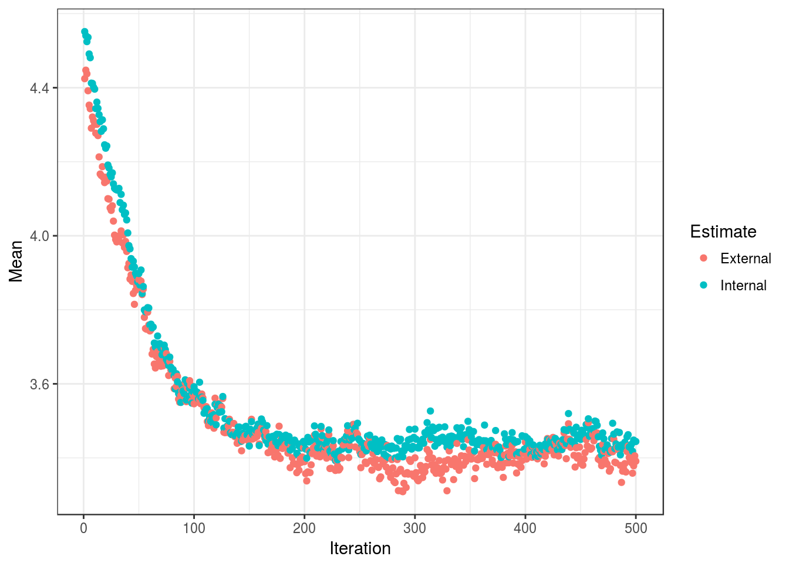
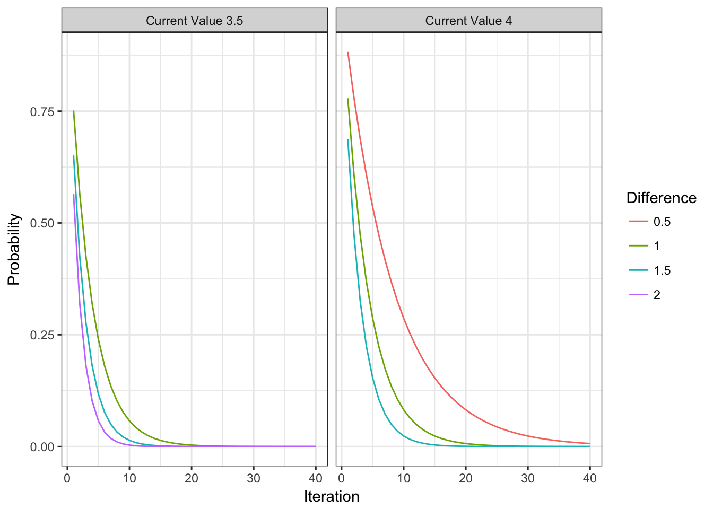

21 Feature Selection using Simulated Annealing
Contents
- Simulated Annealing
- Internal and External Performance Estimates
- Basic Syntax
- Example
- Customizing the Search
21.1 Simulated Annealing
Simulated annealing (SA) is a global search method that makes small random changes (i.e. perturbations) to an initial candidate solution. If the performance value for the perturbed value is better than the previous solution, the new solution is accepted. If not, an acceptance probability is determined based on the difference between the two performance values and the current iteration of the search. From this, a sub-optimal solution can be accepted on the off-change that it may eventually produce a better solution in subsequent iterations. See Kirkpatrick (1984) or Rutenbar (1989) for better descriptions.
In the context of feature selection, a solution is a binary vector that describes the current subset. The subset is perturbed by randomly changing a small number of members in the subset.
21.2 Internal and External Performance Estimates
Much of the discussion on this subject in the genetic algorithm page is relevant here, although SA search is less aggressive than GA search. In any case, the implementation here conducts the SA search inside the resampling loops and uses an external performance estimate to choose how many iterations of the search are appropriate.
21.3 Basic Syntax
The syntax of this function is very similar to the previous information for genetic algorithm searches.
The most basic usage of the function is:
obj <- safs(x = predictors,
y = outcome,
iters = 100)where
x: a data frame or matrix of predictor valuesy: a factor or numeric vector of outcomesiters: the number of iterations for the SA
This isn’t very specific. All of the action is in the control function. That can be used to specify the model to be fit, how predictions are made and summarized as well as the genetic operations.
Suppose that we want to fit a linear regression model. To do this, we can use train as an interface and pass arguments to that function through safs:
ctrl <- safsControl(functions = caretSA)
obj <- safs(x = predictors,
y = outcome,
iters = 100,
safsControl = ctrl,
## Now pass options to `train`
method = "lm")Other options, such as preProcess, can be passed in as well.
Some important options to safsControl are:
method,number,repeats,index,indexOut, etc: options similar to those fortraintop control resampling.metric: this is similar totrain’s option but, in this case, the value should be a named vector with values for the internal and external metrics. If none are specified, the first value returned by the summary functions (see details below) are used and a warning is issued. A similar two-element vector for the optionmaximizeis also required. See the last example here for an illustration.holdout: this is a number between[0, 1)that can be used to hold out samples for computing the internal fitness value. Note that this is independent of the external resampling step. Suppose 10-fold CV is being used. Within a resampling iteration,holdoutcan be used to sample an additional proportion of the 90% resampled data to use for estimating fitness. This may not be a good idea unless you have a very large training set and want to avoid an internal resampling procedure to estimate fitness.improve: an integer (or infinity) defining how many iterations should pass without an improvement in fitness before the current subset is reset to the last known improvement.allowParallel: should the external resampling loop be run in parallel?.
There are a few built-in sets of functions to use with safs: caretSA, rfSA, and treebagSA. The first is a simple interface to train. When using this, as shown above, arguments can be passed to train using the ... structure and the resampling estimates of performance can be used as the internal fitness value. The functions provided by rfSA and treebagSA avoid using train and their internal estimates of fitness come from using the out-of-bag estimates generated from the model.
21.4 Example
Using the example from the previous page where there are five real predictors and 40 noise predictors.
We’ll fit a random forest model and use the out-of-bag RMSE estimate as the internal performance metric and use the same repeated 10-fold cross-validation process used with the search. To do this, we’ll use the built-in rfSA object for this purpose. The default SA operators will be used with 1000 iterations of the algorithm.
sa_ctrl <- safsControl(functions = rfSA,
method = "repeatedcv",
repeats = 5,
improve = 50)
set.seed(10)
rf_sa <- safs(x = x, y = y,
iters = 500,
safsControl = sa_ctrl)
rf_sa##
## Simulated Annealing Feature Selection
##
## 100 samples
## 50 predictors
##
## Maximum search iterations: 500
## Restart after 50 iterations without improvement (6.3 restarts on average)
##
## Internal performance values: RMSE, Rsquared
## Subset selection driven to minimize internal RMSE
##
## External performance values: RMSE, Rsquared
## Best iteration chose by minimizing external RMSE
## External resampling method: Cross-Validated (10 fold, repeated 5 times)
##
## During resampling:
## * the top 5 selected variables (out of a possible 50):
## real1 (100%), real2 (100%), real4 (100%), real5 (100%), bogus17 (88%)
## * on average, 19.2 variables were selected (min = 13, max = 30)
##
## In the final search using the entire training set:
## * 30 features selected at iteration 318 including:
## real1, real2, real4, real5, bogus1 ...
## * external performance at this iteration is
##
## RMSE Rsquared
## 3.2674 0.6785As with the GA, we can plot the internal and external performance over iterations.
plot(rf_sa) + theme_bw()
The performance here isn’t as good as the previous GA or RFE solutions. Based on these results, the iteration associated with the best external RMSE estimate was 318 with a corresponding RMSE estimate of 3.27.
Using the entire training set, the final SA is conducted and, at iteration 318, there were 30 selected: real1, real2, real4, real5, bogus1, bogus2, bogus6, bogus10, bogus12, bogus13, bogus16, bogus18, bogus19, bogus22, bogus24, bogus25, bogus26, bogus27, bogus29, bogus30, bogus31, bogus32, bogus34, bogus36, bogus37, bogus39, bogus42, bogus43, bogus44, bogus45. The random forest model with these predictors is created using the entire training set is trained and this is the model that is used when predict.safs is executed.
21.5 Customizing the Search
21.5.1 The fit Function
This function builds the model based on a proposed current subset. The arguments for the function must be:
x: the current training set of predictor data with the appropriate subset of variablesy: the current outcome data (either a numeric or factor vector)lev: a character vector with the class levels (orNULLfor regression problems)last: a logical that isTRUEwhen the final SA search is conducted on the entire data set...: optional arguments to pass to the fit function in the call tosafs
The function should return a model object that can be used to generate predictions. For random forest, the fit function is simple:
rfSA$fit## function (x, y, lev = NULL, last = FALSE, ...)
## {
## loadNamespace("randomForest")
## randomForest::randomForest(x, y, ...)
## }
## <environment: namespace:caret>21.5.2 The pred Function
This function returns a vector of predictions (numeric or factors) from the current model. The input arguments must be
object: the model generated by thefitfunctionx: the current set of predictor set for the held-back samples
For random forests, the function is a simple wrapper for the predict function:
rfSA$pred## function (object, x)
## {
## tmp <- predict(object, x)
## if (is.factor(object$y)) {
## out <- cbind(data.frame(pred = tmp), as.data.frame(predict(object,
## x, type = "prob")))
## }
## else out <- tmp
## out
## }
## <environment: namespace:caret>For classification, it is probably a good idea to ensure that the resulting factor variables of predictions has the same levels as the input data.
21.5.3 The fitness_intern Function
The fitness_intern function takes the fitted model and computes one or more performance metrics. The inputs to this function are:
object: the model generated by thefitfunctionx: the current set of predictor set. If the optionsafsControl$holdoutis zero, these values will be from the current resample (i.e. the same data used to fit the model). Otherwise, the predictor values are from the hold-out set created bysafsControl$holdout.y: outcome values. See the note for thexargument to understand which data are presented to the function.maximize: a logical fromsafsControlthat indicates whether the metric should be maximized or minimizedp: the total number of possible predictors
The output should be a named numeric vector of performance values.
In many cases, some resampled measure of performance is used. In the example above using random forest, the OOB error was used. In other cases, the resampled performance from train can be used and, if safsControl$holdout is not zero, a static hold-out set can be used. This depends on the data and problem at hand. If left
The example function for random forest is:
rfSA$fitness_intern## function (object, x, y, maximize, p)
## rfStats(object)
## <environment: namespace:caret>21.5.4 The fitness_extern Function
The fitness_extern function takes the observed and predicted values form the external resampling process and computes one or more performance metrics. The input arguments are:
data: a data frame or predictions generated by thefitfunction. For regression, the predicted values in a column calledpred. For classification,predis a factor vector. Class probabilities are usually attached as columns whose names are the class levels (see the random forest example for thefitfunction above)lev: a character vector with the class levels (orNULLfor regression problems)
The output should be a named numeric vector of performance values.
The example function for random forest is:
rfSA$fitness_extern## function (data, lev = NULL, model = NULL)
## {
## if (is.character(data$obs))
## data$obs <- factor(data$obs, levels = lev)
## postResample(data[, "pred"], data[, "obs"])
## }
## <environment: namespace:caret>Two functions in caret that can be used as the summary function are defaultSummary and twoClassSummary (for classification problems with two classes).
21.5.5 The initial Function
This function creates an initial subset. Inputs are:
vars: the number of possible predictorsprob: the probability that a feature is in the subset...: not currently used
The output should be a vector of integers indicating which predictors are in the initial subset.
Alternatively, instead of a function, a vector of integers can be used in this slot.
21.5.6 The perturb Function
This function perturbs the subset. Inputs are:
x: the integers defining the current subsetvars: the number of possible predictorsnumber: the number of predictors to randomly change...: not currently used
The output should be a vector of integers indicating which predictors are in the new subset.
21.5.7 The prob Function
This function computes the acceptance probability. Inputs are:
old: the fitness value for the current subsetnew: the fitness value for the new subsetiteration: the current iteration number or, if theimproveargument ofsafsControlis used, the number of iterations since the last restart...: not currently used
The output should be a numeric value between zero and one.
One of the biggest difficulties in using simulated annealing is the specification of the acceptance probability calculation. There are many references on different methods for doing this but the general consensus is that 1) the probability should decrease as the difference between the current and new solution increases and 2) the probability should decrease over iterations. One issue is that the difference in fitness values can be scale-dependent. In this package, the default probability calculations uses the percent difference, i.e. (current - new)/current to normalize the difference. The basic form of the probability simply takes the difference, multiplies by the iteration number and exponentiates this product:
prob = exp[(current - new)/current*iteration]To demonstrate this, the plot below shows the probability profile for different fitness values of the current subset and different (absolute) differences. For the example data that were simulated, the RMSE values ranged between values greater than 4 to just under 3. In the plot below, the red curve in the right-hand panel shows how the probability changes over time when comparing a current value of 4 with a new values of 4.5 (smaller values being better). While this difference would likely be accepted in the first few iterations, it is unlikely to be accepted after 30 or 40. Also, larger differences are uniformly disfavored relative to smaller differences.
grid <- expand.grid(old = c(4, 3.5),
new = c(4.5, 4, 3.5) + 1,
iter = 1:40)
grid <- subset(grid, old < new)
grid$prob <- apply(grid, 1,
function(x)
safs_prob(new = x["new"],
old= x["old"],
iteration = x["iter"]))
grid$Difference <- factor(grid$new - grid$old)
grid$Group <- factor(paste("Current Value", grid$old))
ggplot(grid, aes(x = iter, y = prob, color = Difference)) +
geom_line() + facet_wrap(~Group) + theme_bw() +
ylab("Probability") + xlab("Iteration")
While this is the default, any user-written function can be used to assign probabilities.